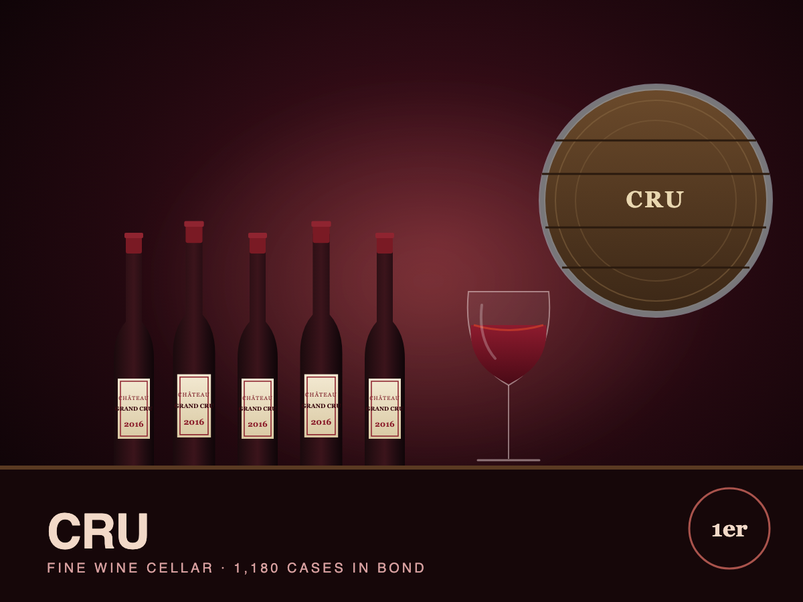

Cellar
CRU secures allocation of 2024 Bordeaux en primeur at lowest release prices since 2019
The manager deployed $410,000 of subscription proceeds into First Growth and Right Bank 2024s.
Read more →CRU tokens represent fractional ownership of a professionally managed collection of 1,180 cases of classified-growth Bordeaux, Grand Cru Burgundy and Super Tuscan wines held under bond in London and Geneva.

Fine wine is a finite, consumable asset: every bottle drunk makes the rest scarcer. CRU offers diversified exposure to the most liquid segment of the market with professional sourcing, storage and exit.
Cru Reserve Fine Wine (CRU) owns a cellar of 1,180 cases assembled by a team with two decades of trade experience. The portfolio is concentrated in wines with deep secondary markets: First and Second Growth Bordeaux from 2005–2020, Grand Cru Burgundy from top domaines, and a satellite allocation to Super Tuscans and Champagne.
Every case is stored in bond at Octavian (Corsham, UK) or Geneva Freeport under the ownership of Cru Reserve Cellars Ltd., which means no duty or VAT is paid until a case leaves bond. Cases are held in original wooden cases with provenance documented from the producer or négociant.
The collection is valued monthly against Liv-ex market prices, and the manager sells cases as they reach their target drinking window or valuation, distributing proceeds or reinvesting in younger vintages according to the cellar plan.
70% of value in Liv-ex Fine Wine 50 constituents: Lafite, Latour, Margaux, Mouton, Haut-Brion and top Burgundy domaines.
Temperature 13°C, humidity 70%, vibration-free. Cases are identified by unique barcode and rotation is inspected annually.
Sell into drinking-window demand, buy en primeur and ex-château releases. Target 8–12% net annual return over the cycle.
Composition of the CRU collection as of the September 1, 2026 monthly valuation.
| Total cases | 1,180 (12 × 75cl equivalent) |
| Wines | 41 distinct wines · 9 vintages |
| Regions | Bordeaux 58% · Burgundy 27% · Tuscany 9% · Champagne 6% |
| Vintage range | 2005 – 2022 |
| Storage | Octavian Vaults (Corsham, UK) 74% · Geneva Freeport 26% |
| Condition | OWC, provenance documented; 100% inspected Feb 2026 |
| Valuation source | Liv-ex mid-price, monthly |
| Insured value | $4.97M full replacement |
| Top holding | Château Lafite Rothschild 2016 · 84 cases · 9.1% |
| Custodian record | Cru Reserve Cellars Ltd. as owner of record at both bonds |
Cru Reserve Cellars Ltd., a UK company, is the legal owner of every case. CRU tokens are shares in that company, giving holders indirect ownership of the whole cellar rather than specific cases. The company has no debt and no activity other than owning the wine.
Every case entered the cellar either en primeur via a Bordeaux négociant, directly from the producer, or from a merchant with a documented chain of custody. Cases are photographed at intake and physically inspected each February by an independent wine auditor.
CRU NAV is marked monthly to Liv-ex mid-prices. Fine wine has historically shown low correlation to equities with lower volatility than most alternatives.
Summary of the Vintage I share offering. The Offering Document governs in the event of any inconsistency.
| Token | CRU — Cru Reserve Fine Wine ordinary share |
| Underlying | 1 / 20,000 share in Cru Reserve Cellars Ltd. |
| Tokens offered | 12,000 (Vintage I); 8,000 held by founders and seed investors |
| Issue price | Monthly NAV + 1.5% sourcing charge (Sep: $252.33) |
| Minimum subscription | 4 tokens (≈ $1,000) |
| Distributions | Discretionary on case sales; reinvestment default |
| Management fee | 1.25% p.a. of NAV; 10% performance fee over 6% hurdle |
| Storage & insurance | Included in management fee |
| Eligible investors | Verified investors; excludes jurisdictions restricting alcohol investment |
| Governing law | England & Wales |
September issue price $252.33 (NAV $248.60 + 1.5%).
Founders built the collection across three en primeur campaigns and secondary purchases.
Independent inspection of all 1,180 cases; 2 cases downgraded for label condition.
12,000 tokens offered at NAV plus 1.5%.
Proceeds deployed into 2024 Bordeaux en primeur at attractive release prices.
Sale of 2009 and 2010 Bordeaux entering peak drinking windows.
Optional second raise to expand Burgundy and Champagne allocation.
All offering documents are available to prospective investors. Click any document for a summary.
Recent coverage and issuer announcements relevant to CRU holders.
The manager deployed $410,000 of subscription proceeds into First Growth and Right Bank 2024s.
Read more →The Liv-ex 1000 rose 0.8% in August, its third consecutive monthly gain after a two-year correction.
Read more →Peak-drinking-window demand from Asian merchants drove the premium.
Read more →306 cases were transferred to Geneva to diversify storage location and simplify sales to Swiss and Asian buyers.
Read more →Tokens issued monthly at NAV plus a 1.5% sourcing charge.
Read more →How consumption drives fine wine returns, and how CRU times its sales.
Read more →Common questions from prospective CRU investors.
An investment in CRU involves a high degree of risk. Prospective investors should carefully consider the following, together with the full risk disclosure in the offering memorandum.